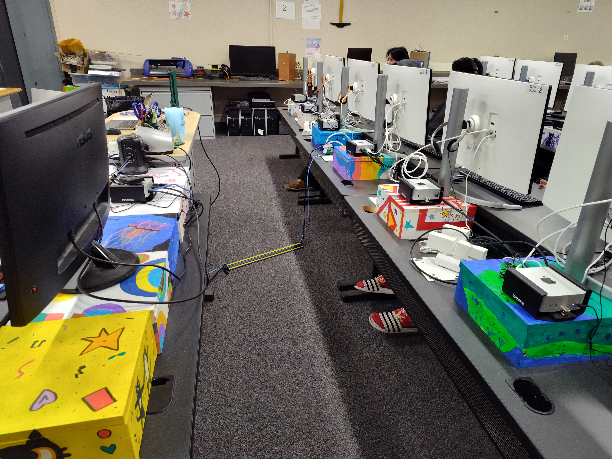
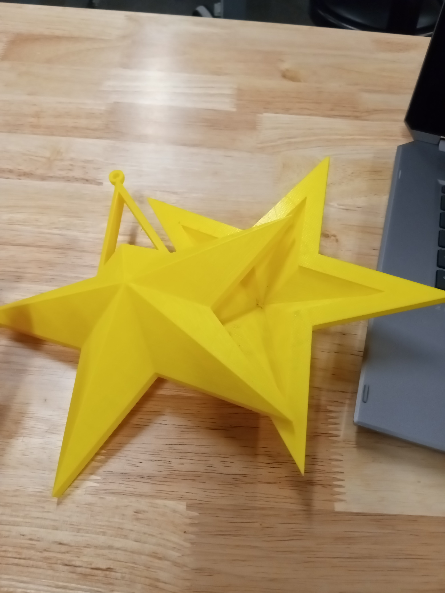

Projects

This was a staff project that me and my partner Derrick worked on together. We had to prime, paint with acrylic markers, and seal 36 wooden boxes that had computers mounted on them. We also had to make a drilling template that was lasercut that had to fit the corner perfectly.
.png)
This is Luffy from One Piece that I made by Lasercutting and layering wood to make him look 3D, then I painted him.

This is a 3D printed star I made for the escape room which was space themed for my Product Design class. I learned how to 3D model using Fusion 360 and watched some tutorials to make it hollow in the inside because, it hid the key that let people escape.
This was one of the very first projects I made in my Product Design class. It had a 3D printed body, servos that made the skin of it move, and tentacles that had LEDs that lit up when it sensed something.
This is a DC motor car that I had to make for a midterm in my Intro To Engineering class. I had to make a lasercut chassis that had to be pressfit not glued, 3D printed wheels and axels, then it had to have LED lights, and lastly all be powered by a propeller that made it move.

For a teacher client we had to work with her to make 3D printed limbs, objects, and faces to put on pickles for this lab in her anatomy class. I decided to work on making faces for each and every scenario she had and 3D printed them.